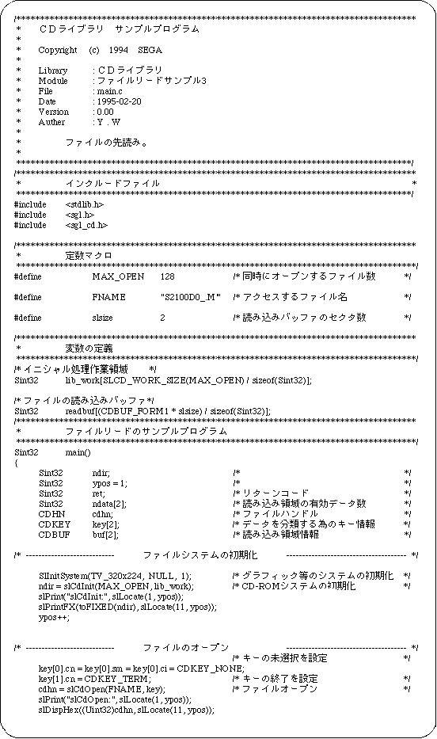
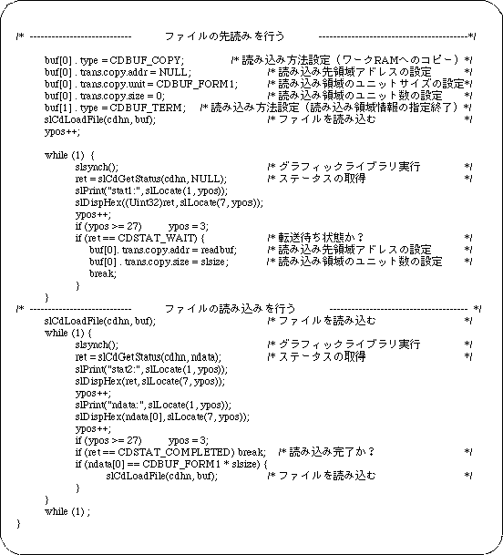

Return to previous page | Return to menu | Go to next page
About the prefetch function
When reading data from a CD-ROM, the mechanical operation of the CD drive is involved, so the data is not actually read at the next moment when reading is started. The function that minimizes this waiting time is the look-ahead function. Sega Saturn has an area to temporarily store data read from CD-ROM. This area is called the CD buffer. When the next file to be read is determined, data is read into the CD buffer and transferred to memory when data is needed.
Figure 12-3 CD buffer

When the address of the function “slCdLoadFile” already described is set to NULL, the size of the read area is set to 0, and the return value of the function “slCdGetStatus” is “CDSTAT_WAIT”, the prefetching is completed. After this, when the address and size of the load area are set with the function “slCdLoadFile”, the transfer starts immediately. You can also set the read area address and size before pre-reading to the CD buffer is complete.
- 【 Sint32 slCdLoadFile (CDHN cdhn, CDBUF buf[]);】
- Specify the following to read ahead in the CD buffer.
buf[ i ]. type = CDBUF_COPY;
buf[ i ]. trans.copy.addr = NULL;
buf[ i ]. trans.copy.unit = CDBUF_FORM1;
buf[ i ]. trans.copy.size = 0;
After specifying all the transfer areas, specify “CDBUF_TERM” as the last “type”.
Sample program 3 shows an example of prefetching program.
This sample program is a process for reading a file on a CD-ROM, and is a basic use example of a library process for pre-reading a file from a CD-ROM. The procedure is described along Flow 12-3.
- Performs initialization of graphics and other systems.
- Initializes the CD-ROM system.
- Opens a file.
Since there is key information for classifying data in the input parameter of the function that performs file opening, set this information as necessary.
- The file is read using the file handle and read area information of the return value of the file open function as parameters.
At this time, set NULL to the read destination area address of the read area information and set the size to 0 to prefetch the file.
- Executes the graphic library (function “slSynch ()”).
- Get status information and check if it is waiting for transfer.
If waiting for transfer, end the loop.
Call the function “slSynch ()” in this loop.
- Read the file again.
At this time, the address is set to the read destination area address of the read area information, and the file is read.
- Executes the graphic library (function “slSynch ()”).
The file specified by reading the file is actually read at this time.
- Get status information and check if the file has been read.
If the file has not been read, it loops until the status is read.
In this loop, call the function “slSynch ()”.
Flow 12-3 Sample program 3 (look ahead sample_cd3 / main.c)


List 12-3 Sample program 3 (look ahead sample_cd3 / main.c) (continued)

Return to previous page | Return to menu | Go to next page